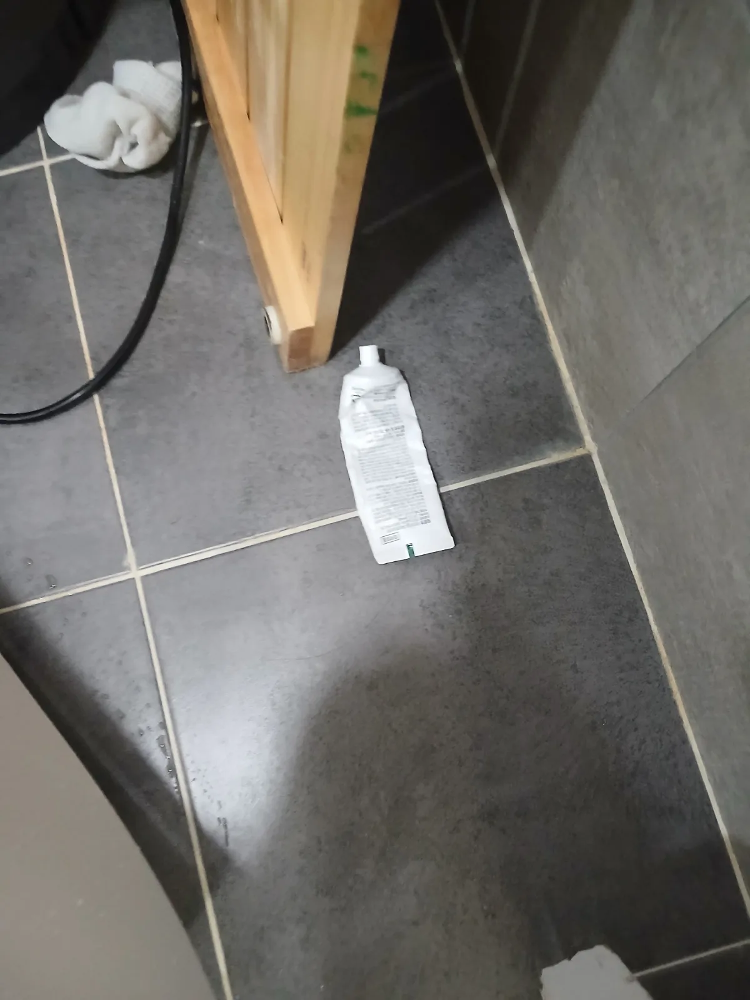

수지구 풍덕천동 변기막힘, 현장 도착 후 진단
용인시 수지구 풍덕천동에서 변기가 막혀 사용할 수 없다는 요청을 받고 필요한 장비를 준비해 신속하게 현장으로 출동했습니다.
배수 상태를 점검해보니 단순한 휴지 막힘보다는 일정한 크기와 형태를 가진 이물질이 변기 내부에 걸렸을 가능성이 있었습니다. 변기를 바로 철거하지 않고 해결할 수 있는지 확인하기 위해 먼저 전문 석션 장비를 사용하기로 했습니다.
신라건축설비는 작업을 시작하기 전 예상되는 막힘 위치와 적용할 작업 방법을 설명하고, 현장 상태에 따라 필요한 작업 범위를 안내한 뒤 진행합니다.
1단계: 증상 확인과 필요한 장비 작업
변기 배출구에 석션 호스를 밀착시켜 내부 이물질을 밖으로 회수하는 작업을 시도했습니다. 그러나 강한 흡입력을 가해도 막힘을 일으킨 물체가 빠져나오지 않았습니다.
치약처럼 잘 구부러지는 튜브형 물체는 변기의 굴곡진 통로를 따라 휘어진 상태로 벽면에 밀착될 수 있습니다. 이 경우 석션의 흡입력이 전달되더라도 물체가 쉽게 움직이지 않아 외부에서 회수하기 어렵습니다.
무리하게 작업을 반복하거나 이물질을 오수관 안쪽으로 밀어 넣으면 막힘 위치가 더 깊어질 수 있습니다. 따라서 석션 작업만으로 해결하기 어렵다고 판단하고, 고객에게 작업 범위를 설명한 뒤 변기 탈거 작업으로 전환했습니다.

2단계: 원인 구간 처리와 정상 작동 확인
변기를 바닥에서 안전하게 탈거한 뒤 본체를 뒤집어 하부 배출구를 확인했습니다. 이어서 치약이 들어간 방향의 반대쪽에서 에어건으로 압력을 가하자 변기 내부에 걸려 있던 튜브형 치약이 밖으로 빠져나왔습니다.
치약은 부드럽고 잘 구부러지는 재질이라 변기를 통과할 것처럼 보일 수 있습니다. 하지만 길쭉하고 표면이 넓어 변기 트랩의 굴곡을 따라 접히거나 벽면에 달라붙으면 휴지와 오물의 흐름까지 막는 까다로운 이물질이 됩니다.
이번 현장 역시 단순 석션으로는 움직이지 않던 치약을 변기 탈거와 에어건 작업을 통해 손상 없이 회수하면서 막힘의 원인을 정확하게 제거했습니다.

작업 결과와 재발 방지 안내
변기 내부를 막고 있던 치약을 완전히 꺼낸 뒤 물길이 다시 확보된 것을 확인했습니다.
치약이나 화장품 용기처럼 작은 생활용품이 변기 안으로 떨어졌다면 물을 내려 흘려보내려고 하면 안 됩니다. 처음에는 보이던 물체도 물을 반복해서 내리면 굽어진 변기 통로 안쪽으로 이동해 석션만으로 꺼내기 어려워질 수 있습니다.
신라건축설비는 변기막힘·싱크대막힘·하수구막힘을 전문적으로 처리하며, 현장 증상과 막힘 원인에 따라 석션·관통·에어건·변기 탈거 등 적합한 장비와 공법을 선택합니다. 단순히 물길만 일시적으로 뚫는 데 그치지 않고 실제 원인을 찾아 제거하며, 서울 전 지역과 용인시를 비롯한 경기권 현장에 신속하게 출동하고 있습니다.
점검 과정에서 오수관이나 공용배관 문제가 확인되는 경우에는 배관 내시경검사, 샤프트 작업, 고압세척 및 배관 보수공사까지 연계해 대응할 수 있습니다.
최종 조치: 먼저 석션으로 치약 회수를 시도했으나 빠지지 않아 변기를 바닥에서 탈거했습니다. 변기 본체를 뒤집은 뒤 하부 배출구에서 에어건으로 압력을 가해 내부에 걸린 치약을 꺼내고 물길을 확보했습니다.
현장 방문 전 확인하는 비용과 작업 범위
신라건축설비는 현장 증상과 배관 구조를 확인한 뒤 필요한 작업과 예상 비용을 안내합니다. 단순 관통으로 해결되는지, 배관내시경·석션·고압세척 또는 변기 탈거가 필요한지는 현장 상태에 따라 달라집니다. 출장비와 야간 작업비, 추가 장비 비용이 발생할 수 있는 경우 작업 전에 먼저 설명하고 동의를 받은 범위에서 진행합니다.
업체를 선택할 때 확인할 사항
무조건적인 ‘0원’ 표현보다 실제 작업 범위, 추가 비용 조건, 사용 장비와 사후 대응 기준을 확인하는 것이 중요합니다. 해결되지 않았을 때의 비용 기준과 작업 후 동일 증상 발생 시 점검 범위를 사전에 문의해두면 불필요한 분쟁을 줄일 수 있습니다.
수지구 변기막힘 자주 묻는 질문
변기막힘은 왜 반복되나요?
수지구 풍덕천동 현장처럼 변기 물이 원활하게 내려가지 않아 정상적인 사용이 어려웠습니다. 물을 내려도 배수가 시원하게 이루어지지 않아 변기 내부에 이물질이 걸린 것으로 의심되는 상태였습니다. 증상은 원인이 현장마다 다를 수 있습니다. 변기 내부 이물질뿐 아니라 하부 오수관 막힘이나 배관 상태 때문에 반복될 수 있습니다. 같은 변기막힘이 재발하면 막힌 위치와 원인을 다시 확인하는 것이 중요합니다.
변기 물이 안 내려가거나 역류하면 변기뚫는업체를 불러야 하나요?
물이 천천히 내려가거나 수위가 차오르고 변기역류가 반복되면 단순 뚫어뻥보다 전문 장비 점검이 필요한 경우가 있습니다. 현장에서는 증상과 배관 구조를 먼저 확인합니다.
변기 이물질 막힘은 변기를 탈거해야 하나요?
물티슈·청소포·플라스틱·음식물처럼 변기 트랩에 걸린 이물질은 위치에 따라 변기 탈거가 필요할 수 있습니다. 무조건 탈거하지 않고 먼저 막힘 위치를 판단합니다.
변기뚫는업체는 어떤 장비로 작업하나요?
현장 상태에 따라 석션, 에어건, 배관내시경, 변기 탈거 등을 사용합니다. 하부 오수관 문제라면 변기만 뚫는 작업보다 배관 구간 확인이 중요합니다.
변기막힘 비용은 어떻게 정해지나요?
단순 관통인지, 이물질 제거와 변기 탈거가 필요한지, 오수관이나 공용배관 작업이 필요한지에 따라 달라집니다. 추가 장비나 작업이 필요하면 진행 전에 범위와 비용을 안내합니다.
변기에서 냄새가 나거나 물이 자주 차오르는 것도 막힘과 관련 있나요?
악취나 수위 이상이 항상 막힘 때문인 것은 아니지만 배수 불량, 오수관 상태, 연결부 문제와 함께 나타날 수 있습니다. 반복되면 현장 점검으로 원인을 구분해야 합니다.
변기막힘 서울·경기 출동지역
신라건축설비는 수지구 풍덕천동 현장을 포함해 서울 25개 구와 경기도 31개 시·군의 배관 문제를 상담합니다. 현장 거리와 기사 배정 상황에 따라 출동 가능 여부를 먼저 안내드립니다.
서울 전 지역
강남구 · 강동구 · 강북구 · 강서구 · 관악구 · 광진구 · 구로구 · 금천구 · 노원구 · 도봉구 · 동대문구 · 동작구 · 마포구 · 서대문구 · 서초구 · 성동구 · 성북구 · 송파구 · 양천구 · 영등포구 · 용산구 · 은평구 · 종로구 · 중구 · 중랑구
경기도 주요 출동지역
수원시 · 용인시 · 고양시 · 화성시 · 성남시 · 부천시 · 남양주시 · 안산시 · 평택시 · 안양시 · 시흥시 · 파주시 · 김포시 · 의정부시 · 광주시 · 하남시 · 광명시 · 군포시 · 양주시 · 오산시 · 이천시 · 안성시 · 구리시 · 의왕시 · 포천시 · 양평군 · 여주시 · 동두천시 · 과천시 · 가평군 · 연천군